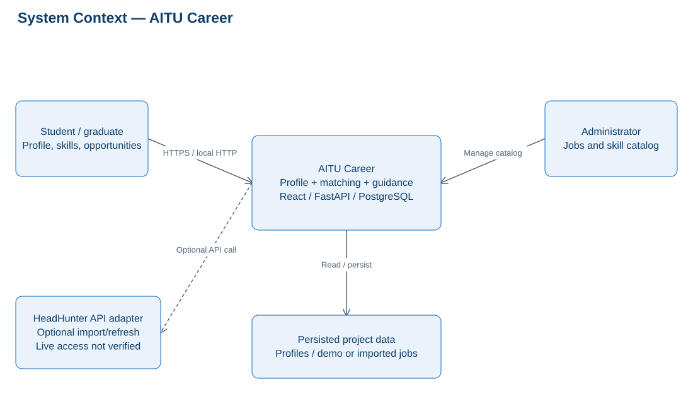
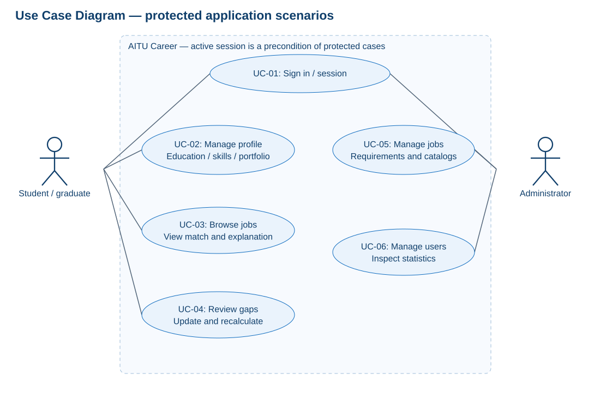
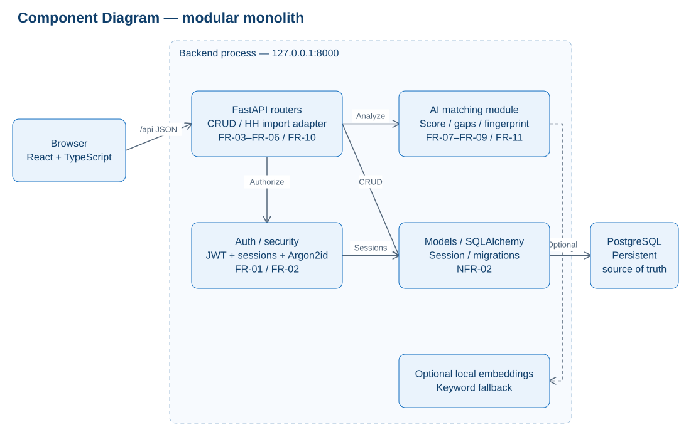
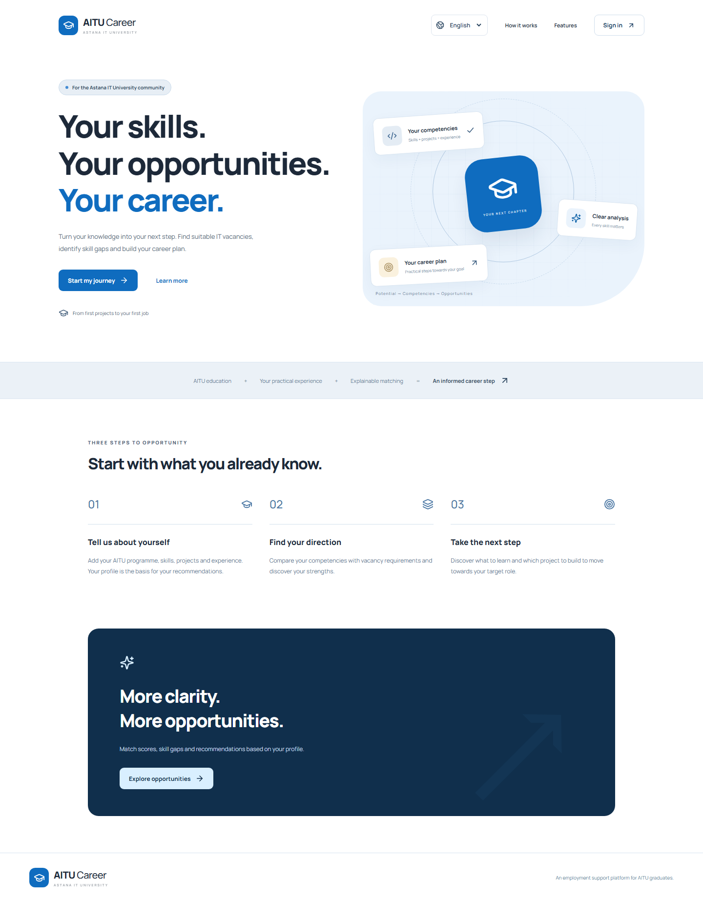

AI-Based Platform to Support the Employment of Astana IT University Graduates
24 October 2026
Probationary period 1 submission. Current implementation and verification evidence are documented. Interviews and supervisor feedback are optional; no such evidence or approval is claimed.
Team size
2
Student 1 — full name
Қожабек Аяділ Нұрланұлы
Student 2 — full name
Амантай Жан Әділұлы
Group
SE-2425 (student 1); SE-2419 (student 2)
Supervisor
Оразова Арайлым Жанболаткызы
Supervisor position
Senior Lecturer
Repository URL
https://github.com/vbl0-0/AITU-Career
Issue tracker URL
https://github.com/users/vbl0-0/projects/1
Submission deadline: 24 October 2026 before 18:00 (UTC+5).
Contents
1. Project Proposal and Scope
2. Evidence of Relevance and Optional User Research
3. Critical Literature Review
4. Existing System Comparison
5. Technology Comparison and Architectural Decisions
6. Requirements Specification and Acceptance Criteria
7. Architecture, Diagrams and Data
8. UX and Prototype
9. Verification and Evaluation Plan
10. Project Management, Responsibilities and Risks
11. Review Status and Optional Supervisor Feedback
Appendix A. References
Appendix B. Submission Checklist and Evidence Status
1. Project Proposal and Scope
AI-Based Platform to Support the Employment of Astana IT University Graduates.
Problem statement. Graduates need to compare their educational and practical experience with heterogeneous IT job requirements and identify an actionable next step. The existence and scale of this need specifically among AITU graduates remain hypotheses until local user discussions are completed. Research on skill extraction supports the technical relevance of the task, but does not establish local demand [S01–S05].
Target users are senior AITU students and graduates, plus an administrator of the educational prototype. A career-center representative is a potential requirements expert. An employer dashboard is outside the current MVP.
Aim. Develop and evaluate a reproducible prototype that explains how a graduate profile covers IT vacancy skill requirements, identifies skill gaps and suggests development actions. The matching percentage is not a probability of employment.
Objective
Verifiable outcome
Investigate the domain
At least 12 meaningfully used sources including eight scientific publications; comparison of four systems. Optional user research is planned for later validation.
Specify requirements
A priority, acceptance criterion and verification method for each mandatory requirement.
Design the system
System context, use cases, components, data relationships and API responsibilities.
Implement the core journey
Profile → skills → vacancy → explained match → development actions.
Evaluate the approach
Compare exact matching, normalization and optional semantics under one fixed protocol.
Prepare submission evidence
Unified report, editable diagrams, traceable tasks and actual verification evidence.
Included: authentication and graduate/admin roles; AITU-oriented profiles and education; skills with proficiency levels; projects, certificates and experience; vacancies and saved jobs; transparent weighted matching; saved analyses with staleness detection; recommendations and administration. The local seed contains 30 fictional vacancies clearly identified as demonstration data.
Excluded from this stage: automated hiring decisions, validated prediction of employment, university SSO/DU/Moodle integration, large-scale collection of external vacancies, production SLA, employer accounts and training a large language model. Visual similarity to university services does not imply integration or institutional endorsement.
The team consists of two students. Confirmed names and GitHub accounts are recorded below. Actual contributions are recorded when supported by completed work and review evidence.
Backend/API and migration delivery, backend regression tests and repository automation; publication and verification assisted by OpenAI Codex. Evidence: https://github.com/vbl0-0/AITU-Career/pull/19 ; https://github.com/vbl0-0/AITU-Career/pull/21 ; commits 6c434f2 and 0b8c8bb. These records describe current delivery, not exclusive initial authorship of all imported code.
Frontend, multilingual interface, research documentation and report-source delivery; publication and verification assisted by OpenAI Codex. Evidence: https://github.com/vbl0-0/AITU-Career/pull/20 ; https://github.com/vbl0-0/AITU-Career/pull/22 ; commits 7717652, c12021f and 203f7c7. These records describe current delivery, not exclusive initial authorship of all imported code.
2. Evidence of Relevance and Optional User Research
On 24 October 2026, the team clarified that user interviews and supervisor feedback are optional for this submission. This is a team-reported requirement clarification, not a recorded supervisor approval.
Relevance at this stage is supported by the literature and system comparison in Sections 3–4. No user interviews were conducted and no interview results are presented. Local demand, explanation usefulness and the employment-readiness indicator remain hypotheses rather than empirically established conclusions.
Claim
Available evidence
Limit
Skill extraction and normalization require explicit design decisions.
Scientific publications S01–S05.
Transfer to Kazakh/Russian and AITU profiles needs local evaluation.
Existing services combine vacancy matching and skill development.
Official system materials S11–S14 and the common-criteria comparison.
This does not prove unmet local demand or superiority of this prototype.
Explanations can expose covered, partial and missing skills.
Implemented calculation and automated functional checks.
User comprehension and usefulness have not been measured.
Employment readiness summarizes profile and vacancy evidence.
Documented configurable heuristic.
It is not a validated predictor of hiring success.
Future optional research may include anonymized discussions with graduates, career-center staff and recruiters. Findings should be recorded with actual dates and consent, separated from interpretations and linked to requirement decisions. Such evidence is not a prerequisite for this submission and no participant identities or fabricated responses are included.
3. Critical Literature Review
A targeted engineering search was performed on 19 October 2026 using ACL Anthology, arXiv and official product/technical documentation. Queries covered skill extraction from job postings, multilingual skill matching, sentence embeddings and job-title representations. Inclusion required verifiable metadata and a direct connection to extraction, retrieval or an engineering decision. This is not claimed to be an exhaustive systematic review.
The review uses 17 sources: eight peer-reviewed scientific publications S01–S08, technical report S09 and eight official materials S10–S17. The scientific core is from 2021–2025; Sentence-BERT (2019) is retained as foundational work. The limitations and applications below are the project’s analysis of transferability, not verbatim author claims.
Source and approach
Limitation for this project
Engineering implication
S01. Expert annotation of hard and soft skill mentions and domain-adapted extraction models.
English job postings do not establish performance on Russian/Kazakh texts or AITU profiles.
Evaluate extraction separately from ranking; retain reference spans and annotation rules.
S02. Survey of terminology, datasets and neural skill extraction methods.
Different datasets and task definitions prevent direct comparison of reported scores.
Define the annotation unit, skill terminology and normalization rules before evaluation.
S03. Multilingual domain-adaptive pre-training using the ESCO taxonomy.
Transfer to local occupations and languages requires validation; large-model adaptation needs resources.
Maintain canonical skills and aliases; consider ESCO alignment as a future extension.
The study does not establish universal superiority over supervised methods; inference requires quality control and resources.
Keep external LLM calls optional and assess extraction against fixed labels.
S05. Multilingual vacancy–candidate matching through skill extraction, ESCO alignment and a knowledge graph.
The graph pipeline is more complex than a dictionary, and its benefit for AITU graduates remains unmeasured.
Compare normalization with semantic expansion and retain the origin of each match.
S06. Job-title representations incorporate information from descriptions beyond extracted skills.
Learning job-title representations is different from assessing an individual candidate.
Describe the current score as skill-requirement coverage, not a probability of being hired.
S07. Siamese sentence encoders enable efficient embedding-based text comparison.
Text similarity does not prove skill proficiency or satisfaction of all job conditions.
Use similarity only as supplementary evidence with a limited contribution.
S08. Contrastive learning produces sentence representations in supervised and unsupervised settings.
Semantic textual similarity benchmarks do not replace domain-specific matching evaluation.
Select an encoder using local ranking quality and latency as well as general benchmarks.
S09. A family of multilingual retrieval embeddings offers different model sizes.
Input conventions, model size and inference cost affect suitability.
Include E5 in a future comparison; it is not the model currently configured in the prototype.
Synthesis and research questions
S01–S04 motivate separating a skill mention, its canonical label and evidence of proficiency. The MVP therefore distinguishes an explicitly reported skill/level from inferred text evidence. Dictionary matching is reproducible but limited by catalog coverage and language variation. S03 and S05 motivate taxonomy alignment without establishing a need for a graph database at this scale.
S06 highlights information in vacancy descriptions beyond skill lists. The current score consequently measures only coverage of explicit or extracted skill requirements. S07–S09 justify evaluating embeddings against literal matching, but textual proximity alone does not establish competence. Semantic evidence is therefore capped at a partial contribution and its method is recorded.
RQ1: do alias normalization and optional semantic matching improve nDCG@5 over exact skill matching on a fixed profile/vacancy dataset while retaining interpretable explanations? RQ2: do users distinguish skill coverage from the probability of employment? The contribution is a testable engineering adaptation to AITU. Superiority over commercial systems is not asserted.
4. Existing System Comparison
Four relevant systems are compared on eight consistent criteria using official public documentation: LinkedIn [S11], Handshake [S12], hh.kz [S13] and Coursera Career Academy [S14]. No private product accounts were audited. “Not established” means that the cited sources do not establish the capability; it does not mean the capability is absent.
Criterion
LinkedIn
Handshake
hh.kz
Career Academy
Primary purpose
Job discovery and matching
Early-career discovery and recommendations
Regional job search
Role-oriented skill development
User information
Profile and resume
Profile, interests and activity
Resume and key skills
Learning pathway; vacancy matching not established
Personalized vacancies
Documented
Documented
Exact mechanism not established by S13
Not established
Skills and requirements
Profile and job qualifications
S12 emphasizes interests and activity
Key skills
Skills associated with a career role
Match explanation
Documented
Per-requirement explanation not established
Not established
Role skills rather than individual vacancy fit
Development actions
Profile improvement and upskilling
Career recommendations; detail not established
Not established
Courses and practical projects
Published exact scoring formula
Not established
Not established
Not established
Not established
AITU-program alignment
Not established
Not established
Not established
Not established
Matching and skill-development recommendations already exist in competing systems. The rationale for this prototype is controllable AITU-specific adaptation, an accessible per-requirement calculation and reproducible evaluation on a fixed dataset. Optional future user research can test the local-demand hypothesis. Commercial systems are not quantitative baselines because their internal algorithms and evaluation data are unavailable.
5. Technology Comparison and Architectural Decisions
The alternatives are assessed for a small educational prototype with a Python analysis module, relational data and no interaction history. Assessments are qualitative; no unperformed performance measurements are implied.
Decision
Reasonable alternatives and trade-offs
Selected solution and rationale
Backend platform
FastAPI: validation/OpenAPI and direct Python NLP integration [S15]. Django REST: mature conventions and administration, with a larger framework surface. Node.js/NestJS: a shared frontend language, but Python NLP needs an additional integration boundary.
FastAPI supports one small API/analysis process and a modular code structure.
Data storage
PostgreSQL: relational constraints and transactions [S16]. SQLite: simple setup with a different concurrency/operation profile. MongoDB: flexible documents, with a different strategy for cross-record integrity.
PostgreSQL with SQLAlchemy and Alembic preserves linked profiles, catalog entries and vacancy requirements.
Matching approach
Exact matching: transparent but sensitive to wording. Dictionary/aliases/weights: explainable but requires catalog maintenance. Embedding hybrid: supports paraphrases [S07–S09] but adds calibration and inference cost.
Weighted normalized keyword matching is the default; embeddings remain optional and require separate evaluation.
Component communication
REST/JSON: straightforward CRUD and OpenAPI. GraphQL: flexible selections with an additional schema/cost-control layer. gRPC: typed binary communication but more integration work for a browser client.
REST/JSON under /api, with Vite/nginx proxying to a single browser origin.
Frontend
React/TypeScript: typed components already implemented. Vue/TypeScript: a comparable SPA option requiring component migration. Server templates: a smaller client stack but a different approach to interactive profile editing.
React/TypeScript with Vite follows the implemented journeys; no unmeasured speed advantage is claimed.
ADR-01: use a modular monolith. Authorization, API, analysis and persistence have separate code responsibilities but share one backend deployment. Revisit separation only if profiling demonstrates interference from inference. ADR-02: PostgreSQL is the source of truth; preserve algorithm version and input revisions with saved analyses. ADR-03: absence of the optional model must not break keyword analysis.
6. Requirements Specification and Acceptance Criteria
MoSCoW priorities: Must denotes mandatory MVP behavior; Should denotes a planned improvement; Could denotes an optional extension. An implemented feature is not evidence that users need it. Requirement IDs connect the specification, components, tasks and verification.
ID / priority
Requirement
Acceptance criterion
Verification
FR-01 / Must
Registration and sessions
A new email creates a graduate account; invalid passwords are rejected; logout invalidates the previous access token.
API authentication tests; browser login/logout
FR-02 / Must
Authorization boundaries
Other users’ records are inaccessible; graduates cannot execute admin actions or grant themselves an admin role.
API ownership/role tests
FR-03 / Must
Profile and education
Program, graduation year and desired role are saved; an invalid graduation year is rejected.
API validation; graduate E2E
FR-04 / Must
Skills and proficiency
Catalog skills use levels 1–3; duplicates and unknown IDs are rejected.
API skill tests
FR-05 / Must
Portfolio
Projects, technologies, certificates and experience support CRUD; an end date before the start date is rejected.
Target: keyword matching p95 ≤500 ms on 30 demonstration vacancies after warm-up; no measurement is claimed.
30 warm-up and 200 measured requests on fixed hardware
NFR-07 / Must
Traceability
Saved results include algorithm version, mode, revisions and a context fingerprint.
Unit/API fingerprint tests
NFR-08 / Must
Confidentiality
Submission files exclude .env/tokens and identifiable interview data.
Package inventory and staged-diff review
Matching and readiness rules
Score = 100 × Σ(weight × contribution) / Σ(weight). For an explicit skill, contribution = min(1, user_level / required_level); for an absent skill it is zero. Inferred text and semantic evidence are capped at 0.5. Required/preferred skill weights default to 2/1 and may be set to other positive values. Scores across different vacancies do not imply equal job difficulty.
Readiness is an internal heuristic: market 60%, projects 15%, experience 10%, certificates 5% and education 10%, with configurable normalized weights. Market uses up to five highest-scoring target-role vacancies; relevant experience is capped at 180 non-overlapping days. These weights have not been empirically validated as predictors of employment.
7. Architecture, Diagrams and Data
Students/graduates and administrators use React, FastAPI and PostgreSQL. An explicit HeadHunter API adapter supports import, refresh, deduplication and source/availability tracking; live provider access was not available and no real import is claimed. University SSO and DU/Moodle are not integrated. Default keyword analysis needs no external AI service; the optional embedding model is disabled in the verified configuration.

Figure 1. System context and responsibility boundaries.

Figure 2. User roles and protected use cases.

Figure 3. Draft component architecture aligned with the implementation.
Component
Responsibility
Related requirements
frontend/src/pages and components
Profile, vacancies, analysis and admin screens; routes and error states.
FR-03–FR-10; NFR-04/05
auth routes and core/security.py
Passwords, JWTs, sessions and permission checks.
FR-01/02; NFR-01
profile/jobs/admin routes
Input validation, CRUD, catalog and application journeys.
FR-03–FR-06; FR-10/12
ai/matching.py
Competencies, score, gaps, recommendations, fingerprint and optional semantics.
FR-07–FR-09/11; NFR-07
models/database/migrations
Relationships, constraints, persisted analyses and repeatable seed.
NFR-02/03
Data relationships: User 1:1 GraduateProfile; GraduateProfile 1:N Education, UserSkill, Project, Certificate, Experience, MatchResult and Recommendation. UserSkill/JobSkill link profiles/jobs to Skill; ProjectSkill links project technologies. SkillAlias stores normalization rules. CareerRole and categories are controlled dictionaries. User has AuthSession records; SavedJob links users to jobs. MatchResult preserves a calculated snapshot and its input/version context.
Analysis flow: authenticate and authorize → validate profile/job → normalize catalog terms → collect structured and textual evidence → obtain requirements → calculate weighted coverage → group matched/partial/missing requirements → derive development actions → persist the result with revisions → display it. Input changes do not silently replace the saved snapshot; they flag it as stale.
API route / resource
Purpose
POST /api/auth/register, /login, /refresh, /logout
Profile and portfolio operations; supported methods depend on the resource.
GET /api/jobs; GET /api/jobs/{id}; POST /api/jobs/{id}/match
Vacancy discovery, details and matching.
GET /api/recommendations; GET /api/admin/statistics
Career overview and administrator statistics.
GET /api/health; /docs
Health check and generated API contract.
The full current API contract is available locally at http://localhost:8000/docs. Diagram deliverables include editable SVG, JSON layout models, Mermaid/PlantUML sources and PNG exports. Diagram changes must remain consistent with the code and requirement IDs.
Public screen walkthrough: https://vbl0-0.github.io/AITU-Career/. It presents actual captures of the local application with navigation between screens, not a hosted backend or live editing service. The complete application runs locally using the published development instructions. The interface supports Kazakh, Russian and English; the report is in English. Original screenshot and diagram colors are preserved.
Journey
Steps
Expected outcome
UC-01: Start
Landing → registration/sign-in → dashboard.
An authenticated session and an accessible profile.
UC-02: Profile
Education program → desired role → skills → project.
Saved data and explicit confirmation.
UC-03: Match
Search → vacancy → score → detailed analysis.
Requirement groups and a traceable calculation.
UC-04: Improve
Add FastAPI → open an old analysis → recalculate.
A stale warning followed by a result based on current inputs.
UC-05: Administer
Admin sign-in → jobs → create/update.
Permission checks and validated skill requirements.
UX states include loading, no records, validation errors, server failures, save confirmation and stale results. Focus indication, labels and accessible action names are implemented; a comprehensive accessibility audit remains outstanding. A user-evaluation task asks participants to find a relevant vacancy, identify two gaps and explain the score.

Figure 4. Entry to the graduate journey.Figure 5. Demonstration graduate dashboard.
Verification checks implementation against requirements. Evaluation examines ranking quality and user understanding. Passing software tests does not demonstrate improved employment outcomes or model accuracy on the real labor market.
Verification on 24 October 2026
Observed result
python -m pytest
passed: 60 checks passed. 35.06 seconds; one Starlette TestClient/httpx deprecation warning. The initial database connection timeout was resolved by starting the existing project cluster.
npm run test:e2e
passed: 20 checks passed. Chromium: graduate and admin journeys, portfolio CRUD, Dashboard states, role restrictions, responsive navigation, kk/ru/en and vacancy import/salary regressions. Some focused tests use API fixtures; the core journey and multilingual pages also use the real local API.
npm run check:i18n
passed: 459 checks passed. Translation keys, interpolation parity and static references in kk/ru/en.
npm run build
passed: TypeScript and production Vite build. Existing main-chunk warning: 501.13 kB before gzip.
passed: 22 checks passed. Screenshots inspected; no horizontal document overflow or blocking page alert at 1440px/390px. Keyboard skip-link focus has a 3px outline. This is not comprehensive WCAG conformance.
Formula, levels, boundaries, aliases, partial evidence and semantic fallback/cap.
backend/tests/test_matching.py
API and database
Sessions, roles, ownership, CRUD, constraints and staleness.
backend/tests/test_api.py
Browser
Graduate journey, portfolio, administration and mobile viewport.
frontend/tests/career.spec.ts
Structure
Type checking, production build and model/migration consistency.
npm run build; alembic check
Quality evaluation
Independent labels and a fixed baseline comparison.
Protocol below; experiment not yet performed
Proposed evaluation data: 20 anonymized or synthetic profiles and 50 legally usable vacancies across four or five IT directions. Fix the dataset version, seed and hashes. Ten profiles form development data (500 pairs); the remaining ten form held-out test data (500 pairs). Two experts independently label each pair 0/1/2. Preserve disagreements before adjudication. Do not tune the dictionary or threshold on held-out judgments. Shared vacancies mean this protocol assesses new-profile rather than unseen-vacancy generalization.
B0: exact case-normalized skill-name overlap, without aliases, as an unweighted fraction. B1: the current alias dictionary, proficiency levels and weights. B2: B1 with optional semantic evidence. Use identical candidate vacancies, profiles and labels; choose the semantic threshold on development data only. Ablations without levels and without inferred evidence help explain the source of any improvement.
Metric
Calculation and conditions
Decision criterion / status
Precision@5
Fraction of top-five items labeled 2; macro-average over test profiles.
Measure B0/B1/B2; no values claimed.
nDCG@5
Gain = 2^rel−1; ideal ranking from the same labels.
Five to eight volunteers identify gaps and interpret the score.
Pilot target: ≥80% correct responses; not representative evidence.
Record CPU/RAM, Python/Node/PostgreSQL versions, model revision, threshold, cache state, algorithm version and data hash. Report paired nDCG differences and bootstrap intervals over test profiles with a fixed seed (for example 42 and 1,000 resamples). Small samples limit statistical power; no significance claim is justified without calculation.
Validity threats include convenience sampling, self-reported skills, synthetic vacancies, language bias, tuning leakage, facilitator effects and a small profile sample. Mitigations are independent annotation, a held-out split, negative examples, fixed comparison conditions and retention of raw judgments and errors. Docker and the real embedding model were not exercised in this environment; controlled tests do not replace their evaluation.
10. Project Management, Responsibilities and Risks
The two accounts publish current module deliveries with actual dates. Account attribution documents delivery and verification; it does not reconstruct earlier development history or prove independent authorship of every line. Packaging, code assistance, verification and publication were assisted by OpenAI Codex. No human teammate approval or supervisor approval is claimed.
Member
Published responsibility and evidence
Қожабек Аяділ Нұрланұлы
Backend/API and migration delivery, backend regression tests and repository automation; publication and verification assisted by OpenAI Codex. Evidence: https://github.com/vbl0-0/AITU-Career/pull/19 ; https://github.com/vbl0-0/AITU-Career/pull/21 ; commits 6c434f2 and 0b8c8bb. These records describe current delivery, not exclusive initial authorship of all imported code.
Амантай Жан Әділұлы
Frontend, multilingual interface, research documentation and report-source delivery; publication and verification assisted by OpenAI Codex. Evidence: https://github.com/vbl0-0/AITU-Career/pull/20 ; https://github.com/vbl0-0/AITU-Career/pull/22 ; commits 7717652, c12021f and 203f7c7. These records describe current delivery, not exclusive initial authorship of all imported code.
Tracker: https://github.com/users/vbl0-0/projects/1. The 18 original tasks retain their source IDs, priorities, planned owners and original deadlines. GitHub Issues contain actual acceptance criteria, account assignments and completion evidence. Optional interview/feedback tasks are distinguished from completed work. Later-stage independent labels and matching-quality experiments are not marked complete.
Risk or remaining limit
Response
Static prototype versus the complete application
The public viewer is clearly labelled; use the development guide to run authenticated CRUD and matching.
Demonstration vacancies mistaken for live jobs
The seed dataset is fictional and labelled. No live HeadHunter import or current market representativeness is claimed.
Unmeasured model or employment outcomes
Keep the evaluation protocol; do not infer efficacy from passing implementation tests.
Confusing account history with individual authorship
Preserve real dates and links; state the use of AI assistance and distinguish delivery from historical authorship.
Documents differ from the submitted version
Use the exact prob-period-1 tag and the matching PDF exports; do not move the submitted tag.
Optional evidence shown as mandatory
Record the team clarification and keep future interviews/reviews optional.
Submission version: https://github.com/vbl0-0/AITU-Career/tree/prob-period-1. One representative submits both students' materials before 18:00 UTC+5 on 24 October 2026. A form confirmation is retained only after actual submission.
11. Review Status and Optional Supervisor Feedback
On 24 October 2026, the team clarified that user interviews and supervisor feedback are optional for this submission. This is a team-reported requirement clarification, not a recorded supervisor approval.
No substantive supervisor feedback has been supplied and no approval, signature, meeting or quotation is invented. The absence of optional feedback is not treated as an incomplete mandatory requirement. Independent human peer review is not claimed; available automated technical reviews and corrections are recorded on the actual GitHub issues and PRs.
Actual revision
Rationale and evidence
Clarify optional interviews and supervisor feedback.
Team clarification relayed on 24 October 2026; Sections 2 and 11 now state the actual evidence status.
Update current implementation verification.
60 backend tests, full browser tests, translation parity, production build and migration checks are recorded in the validation artifact.
Document real deliveries and contributions.
Merged PRs and original account-linked commits; Section 10 distinguishes publication from initial code authorship.
Use the required submission tag and accessible materials.
prob-period-1 links, public screen walkthrough, editable diagram sources and separate report/task PDFs.
If optional feedback is received later, record its actual date, reviewed version, comment, response and linked change. Do not retroactively attribute the current technical checks to the supervisor.
Appendix A. References
[S01] Zhang M., Jensen K., Sonniks S., Plank B. (2022). SkillSpan: Hard and Soft Skill Extraction from English Job Postings. NAACL, 4962–4984. Scientific publication. https://aclanthology.org/2022.naacl-main.366/ Accessed 19 October 2026.
[S02] Senger E., Zhang M., van der Goot R., Plank B. (2024). Deep Learning-based Computational Job Market Analysis: A Survey on Skill Extraction and Classification from Job Postings. NLP4HR, 1–15. Scientific publication. https://aclanthology.org/2024.nlp4hr-1.1/ Accessed 19 October 2026.
[S03] Zhang M., van der Goot R., Plank B. (2023). ESCOXLM-R: Multilingual Taxonomy-driven Pre-training for the Job Market Domain. ACL, 11871–11890. Scientific publication. https://aclanthology.org/2023.acl-long.662/ Accessed 19 October 2026.
[S04] Nguyen K., Zhang M., Montariol S., Bosselut A. (2024). Rethinking Skill Extraction in the Job Market Domain using Large Language Models. NLP4HR, 27–42. Scientific publication. https://aclanthology.org/2024.nlp4hr-1.3/ Accessed 19 October 2026.
[S05] Kavas H., Serra-Vidal M., Wanner L. (2025). Multilingual Skill Extraction for Job Vacancy–Job Seeker Matching in Knowledge Graphs. GenAIK, 146–155. Scientific publication. https://aclanthology.org/2025.genaik-1.15/ Accessed 19 October 2026.
[S06] Laosaengpha N., Tativannarat T., Piansaddhayanon C., Rutherford A., Chuangsuwanich E. (2024). Learning Job Title Representation from Job Description Aggregation Network. Findings of ACL, 1319–1329. Scientific publication. https://aclanthology.org/2024.findings-acl.77/ Accessed 19 October 2026.
[S07] Reimers N., Gurevych I. (2019). Sentence-BERT: Sentence Embeddings using Siamese BERT-Networks. EMNLP-IJCNLP, 3982–3992. Scientific publication; foundational work. https://aclanthology.org/D19-1410/ Accessed 19 October 2026.
[S08] Gao T., Yao X., Chen D. (2021). SimCSE: Simple Contrastive Learning of Sentence Embeddings. EMNLP, 6894–6910. Scientific publication. https://aclanthology.org/2021.emnlp-main.552/ Accessed 19 October 2026.
[S09] Wang L., Yang N., Huang X., Yang L., Majumder R., Wei F. (2024). Multilingual E5 Text Embeddings: A Technical Report. arXiv:2402.05672. Technical report / preprint. https://arxiv.org/abs/2402.05672 Accessed 19 October 2026.
[S13] hh.kz. Digitizing candidate skills: guidance on key skills in vacancies. Official product documentation. https://hh.kz/article/25442 Accessed 19 October 2026.
Appendix B. Submission Checklist and Evidence Status
Submission form: https://forms.cloud.microsoft/r/Yy6AXT5pe3. The provided screenshots specify a repository URL, the exact prob-period-1 version URL, individual contributions, current status, one board/task PDF (maximum 10 MB) and one consolidated report PDF (maximum 100 MB). This report contains the eleven main sections in order and a table of contents.
A public screen walkthrough; the complete API-backed application runs locally.
Verification
Current backend, browser, build, translation and migration results.
Docker runtime and real embedding-model evaluation were not performed.
Optional interviews and feedback
Actual absence and team clarification recorded.
No fabricated interview, approval or review record.
Task evidence PDF
tracker-evidence.pdf with genuine board and task captures.
Tasks show actual progress; later-stage work can remain open.
Unified editable report
report.docx, report.html and matching report.pdf.
Use the final named PDF copy for the form.
Form submission
Prepared answers and both upload files.
The representative must verify the final form page and retain the actual confirmation.
Report upload filename: SE-2425_Kozhabek_ProbPeriod1.pdf. Deadline: 24 October 2026 before 18:00 UTC+5. Known fields are completed; any genuinely unknown personal information stays blank. The package does not assert that the form has already been submitted.